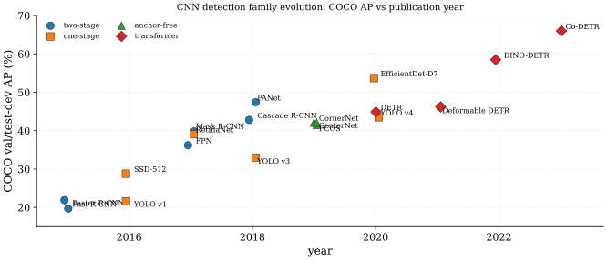

Object detection localizes and classifies multiple objects in images via bounding boxes. Across roughly six years (2014-2020) the literature settled into five overlapping families; two-stage refinement, single-shot dense prediction, focal-loss balanced one-stage, anchor-free per-pixel and keypoint heads, and set-prediction transformers; each occupying a different point on the accuracy/speed/simplicity frontier. Each family also addressed a characteristic set of well-known problems (scale, imbalance, NMS heuristics, anchor design, slow convergence, etc.) walked through paragraph-by-paragraph after the SoTA leaderboard below.
The historical context matters because the same problems recur under new names. Pre-deep-learning detection plateaued near 33% mAP on PASCAL VOC under HOG-feature pipelines1 (Dalal and Triggs 2005) and the deformable part model (Felzenszwalb et al. 2008) (a sliding-window root + parts mixture trained with latent-SVM that defined the pre-CNN state of the art for almost a decade); R-CNN (Girshick et al. 2014) (2014) lifted it to 53.3% by reusing ImageNet (Deng et al. 2009) pretrained CNN features on selective-search proposals, but at ~49 seconds per image. Fast R-CNN (Girshick 2015) (2015) shared backbone computation across proposals for a 213 speedup; Faster R-CNN (Ren et al. 2015) (2015) replaced the external proposal stage with a learned Region Proposal Network. Single-shot detectors emerged in parallel: YOLO (Redmon et al. 2016) (2016) reframed detection as direct regression on a 77 grid at 45 FPS, SSD (Liu et al. 2016) (2016) added multi-scale feature maps. RetinaNet (2017) closed the one-stage/two-stage accuracy gap with focal loss (Lin, Goyal, et al. 2017), while FPN (Lin, Dollár, et al. 2017) became the universal neck. Anchor-free methods (CornerNet (Law and Deng 2018), FCOS (Tian et al. 2019), CenterNet (Zhou et al. 2019)) eliminated the anchor-design hyperparameters in 2019; DETR (Carion et al. 2020) removed NMS via Hungarian matching in 2020 (covered in the transformer chapter).
The five families differ on which problems they accept and which they engineer away. Two-stage detectors handle the foreground/background imbalance via balanced sampling at the RoI head, but inherit a complex multi-stage pipeline and slow inference. One-stage detectors face the imbalance directly through hard mining (SSD), focal loss (RetinaNet), or implicit balanced anchors (YOLO grid). Anchor-free heads sidestep the entire scale-and-aspect anchor-tuning enterprise but still need a label-assignment heuristic (smallest-area box, centerness, etc.). Set-prediction transformers bypass NMS at the cost of 500-epoch training. No family dominates: the COCO leaderboard top is a moving boundary between Cascade-style two-stage refinement, EfficientDet-style compound-scaled one-stage, and DINO-DETR-style transformers, and the production-grade default depends on whether latency, throughput, or peak accuracy is the primary constraint23.
| VOC | COCO | Speed | |||||||||
| Method | Year | Backbone | Head/Loss | Data | mAP | AP | AP50 | APS | APM | APL | FPS |
| R-CNN (Girshick et al. 2014) | 2014 | AlexNet | SVM+ridge-reg | VOC07+12 | 53.3 | - | - | - | - | - | 0.05 |
| Fast R-CNN (Girshick 2015) | 2015 | VGG-16 | RoI(softmax)+sm-L1 | VOC07+12 | 70.0 | 19.7 | 35.9 | - | - | - | 0.5 |
| Faster R-CNN (Ren et al. 2015) | 2015 | VGG-16 | RPN+RoI(softmax)+sm-L1 | VOC07+12 | 73.2 | 21.9 | 42.7 | - | - | - | 5 |
| YOLO v1 (Redmon et al. 2016) | 2016 | Darknet (custom) | grid-MSE(=5,=0.5) | VOC07+12 | 63.4 | - | - | - | - | - | 45 |
| SSD-512 (Liu et al. 2016) | 2016 | VGG-16 | hard-mining(3:1)+sm-L1 | VOC07+12 | 76.8 | 28.8 | 48.5 | 10.9 | 31.8 | 43.5 | 22 |
| FPN (Faster R-CNN) (Lin, Dollár, et al. 2017) | 2017 | ResNet-101 | RPN+RoI(softmax)+sm-L1 | COCO | - | 36.2 | 59.1 | 18.2 | 39.0 | 48.2 | 5 |
| Mask R-CNN (He et al. 2017) | 2017 | ResNet-101 + FPN | RPN+RoI(softmax)+sm-L1+mask | COCO | - | 39.8 | 62.3 | 22.1 | 43.2 | 51.2 | 5 |
| RetinaNet (Lin, Goyal, et al. 2017) | 2017 | ResNet-101 + FPN | Focal(=2,=0.25)+sm-L1 | COCO | - | 39.1 | 59.1 | 21.8 | 42.7 | 50.2 | 5 |
| YOLO v3 (Redmon and Farhadi 2018) | 2018 | Darknet-53 | BCE(per-anchor obj)+sm-L1 | COCO | - | 33.0 | 57.9 | 18.3 | 35.4 | 41.9 | 35 |
| Cascade R-CNN (Cai and Vasconcelos 2018) | 2018 | ResNet-101 + FPN | 3-head cascade(0.5/0.6/0.7) | COCO | - | 42.8 | 62.1 | 23.7 | 45.5 | 55.2 | 7 |
| PANet (Liu et al. 2018) | 2018 | ResNeXt-101 | PAFPN+RoI(softmax)+sm-L1 | COCO | - | 47.4 | 67.2 | 27.2 | 51.0 | 60.0 | 4 |
| CornerNet (Law and Deng 2018) | 2019 | Hourglass-104 | Focal-heatmap+pull/push | COCO | - | 42.1 | 57.8 | 20.8 | 44.8 | 56.7 | 4 |
| FCOS (Tian et al. 2019) | 2019 | ResNet-101 + FPN | center-ness+GIoU+focal-cls | COCO | - | 41.5 | 60.7 | 24.4 | 44.8 | 51.6 | 17 |
| CenterNet (Zhou et al. 2019) | 2019 | Hourglass-104 | Gaussian-heatmap+L1(size) | COCO | - | 42.1 | 61.1 | 19.9 | 43.0 | 51.4 | 7 |
| EfficientDet-D7 (Tan et al. 2020) | 2020 | EfficientNet-B6 | BiFPN+Focal+sm-L1 | COCO | - | 53.7 | 72.4 | 35.8 | 57.0 | 66.3 | 6 |
| YOLO v4 (Bochkovskiy et al. 2020) | 2020 | CSPDarknet-53 | CIoU+BCE-obj+Mosaic-aug | COCO | - | 43.5 | 65.7 | 26.7 | 46.7 | 53.3 | 65 |
| DETR (Carion et al. 2020) | 2020 | ResNet-101 | Hungarian+CE+L1+GIoU(5,2) | COCO | - | 44.9 | 64.7 | 23.7 | 49.5 | 62.3 | 28 |
| Deformable DETR (Zhu et al. 2021) | 2021 | ResNet-50 | Hungarian+CE+L1+GIoU+def-att | COCO | - | 46.2 | 65.2 | 28.8 | 49.2 | 61.7 | 19 |
| DINO-DETR (Zhang et al. 2023) | 2022 | Swin-L | Hungarian+denoising+contrast | COCO+O365 | - | 58.5 | 77.1 | 41.5 | 62.7 | 74.0 | 10 |
| Co-DETR (Zong et al. 2023) | 2023 | ViT-L (MAE) | hybrid Hungarian+ATSS+Faster | COCO+O365 | - | 66.0 | - | - | - | - | - |
The leaderboard separates six eras and a speed column whose meaning differs from the accuracy columns. Reading the table from left to right gives the family-by-family progression (R-CNN one-stage Focal anchor-free compound-scaled transformer); reading top-to-bottom by Year reveals the COCO AP trajectory from 19.7 (Fast R-CNN, 2015) to 66.0 (Co-DETR, 2023), a 3.4 gain spread across backbone scaling4, pyramid sophistication5, and head redesign. Three diagnostics. First, APS almost always lags APM and APL by 15-25 points, the single most persistent failure mode of CNN detectors6. Second, FPS within a family is reliable but cross-family comparisons span four GPU generations7. Third, the gap between best two-stage and best one-stage inverted between 2018 and 2020, eliminating the historical "two-stage = accuracy, one-stage = speed" dichotomy8.
The two-stage R-CNN family defines the era. R-CNN ran 2000 selective-search proposals through an AlexNet/VGG forward pass each, so per-image inference at ~49s was untenable; Fast R-CNN shared a single backbone pass and replaced the per-class SVM cascade with a softmax + smooth-L1 multi-task head, while Faster R-CNN folded proposals into a learned RPN sliding 9 hand-tuned anchors per location9. Mask R-CNN extended the same scaffolding with a per-class binary mask branch and replaced quantising RoIPool with bilinear RoIAlign; the pixel-precise alignment matters far more at strict IoU thresholds10. Cascade R-CNN refines proposals through three heads at IoU thresholds 0.5/0.6/0.7, exploiting the quality-mismatch observation that a single head cannot simultaneously be accurate at all IoU regimes; this is also where label assignment becomes structurally explicit11.
The single-shot SSD/YOLO line trades the proposal stage for direct dense prediction. YOLO partitioned the image into a 77 grid where each cell predicts boxes plus class probabilities at 45 FPS but only 63.4 VOC mAP, paying for speed in localization (19% of YOLO's error is localization vs Fast R-CNN's 8%); SSD recovered accuracy by attaching prediction heads to multiple feature-map resolutions (3838 through 11) so that small objects map to high-resolution layers and large objects to coarse layers, a structurally different solution to scale variance12. SSD also introduced 3:1 hard negative mining as its blunt-instrument response to foreground/background imbalance13, and depends notoriously hard on data augmentation (74.3 65.5 mAP without augmentation). YOLOv3 added k-means anchor priors and FPN-style three-scale prediction; YOLOv4 split engineering into "Bag of Freebies" (Mosaic, CIoU, label smoothing) and "Bag of Specials" (Mish, DIoU-NMS, PANet neck), reaching 43.5 COCO AP at 65 FPS by combining many small recipes rather than one architectural insight.
RetinaNet + FPN closed the one-stage/two-stage accuracy gap with two orthogonal contributions. Focal loss with reweights cross-entropy by prediction confidence so that the cumulative loss from ~100k easy negatives no longer drowns ~100 hard positives14, and the classification head's bias is initialized to to make the initial logits match the empirical class prior. Focal loss beat OHEM because it uses every negative with smooth down-weighting rather than a hard cutoff. Crucially, RetinaNet sat on top of FPN (Lin, Dollár, et al. 2017), whose top-down + lateral pathway propagates semantic strength to high-resolution feature levels at single-pass cost; APS rose from 14.1 to 19.9 (+5.8) on COCO purely from FPN, and FPN became the universal neck across Faster R-CNN, Mask R-CNN, RetinaNet, FCOS, and EfficientDet15.

The anchor-free turn (CornerNet, FCOS, CenterNet) made a structural rather than empirical case. FCOS predicts distances at every foreground pixel of the FPN levels and resolves multi-GT overlap by assigning to the smallest-area box; the only heuristic the paper retains16. The centerness branch suppresses low-quality peripheral predictions for +3.6 AP and is a cheap analogue of objectness. CornerNet detects top-left and bottom-right corner heatmaps with associative-embedding grouping, and CenterNet reduces this further to a single Gaussian-heatmap center per object plus a regression. Anchor-free heads sidestepped hand-tuned anchor scales/ratios entirely17 and proved that proper loss weighting plus per-level FPN assignment closes the gap; ATSS later showed that adaptive label assignment (mean+std of per-object IoU as the dynamic threshold) brings anchor-based and anchor-free recipes to within 0.1 AP, confirming that the anchor itself was never the load-bearing piece18.
The transformer set-prediction line, covered fully in the next chapter, starts with DETR replacing dense prediction + NMS with 100 learned object queries and Hungarian bipartite matching against the ground-truth set. NMS disappears because each query commits to one GT, eliminating the threshold-sensitive greedy suppression heuristic that limits CNN detectors in dense crowds1920. The cost was a 500-epoch convergence schedule (versus 12-24 for Faster R-CNN); Deformable DETR's sparse multi-scale attention reduced this to 50 epochs, DAB-DETR/DN-DETR added content-aware queries and denoising auxiliaries, and DINO-DETR with Swin-L plus contrastive denoising reaches 58.5 COCO AP21. Co-DETR closed the loop by re-introducing one-to-many auxiliary heads (ATSS, Faster R-CNN) alongside the one-to-one Hungarian head during training, lifting Swin-L COCO val from 58.5 to 59.5 and ViT-L COCO test-dev to 66.0 AP, the current chapter ceiling.
The closing reading is that detection has not so much "solved" any of the listed problems as redistributed them. Scale variance moved from image pyramids into FPN; foreground/background imbalance moved from RPN sampling into focal loss into per-query bipartite assignment; anchor design was first adaptive (ATSS), then dropped (FCOS), then absent (DETR); NMS was softened (Soft-NMS, DIoU-NMS) and then removed (DETR). What remains stubborn is small-object AP (still 15-25 points below large-object AP across the entire table, even at Swin-L scale), cross-paper FPS comparability (every paper reports its own GPU)22, and ImageNet/Object365 pretraining dependence23; the latter starts to dissolve only with self-supervised backbones (MAE, DINO) trained at 10+ image scale24.
References
HOG descriptor parameters (Dalal and Triggs 2005): gradient magnitudes and unsigned orientations (0-180°) are accumulated into 9-bin histograms over dense 88-pixel cells; cells are grouped into overlapping 22-cell blocks (1616 pixels), each block normalized by L2-Hys (clip magnitudes at 0.2, renormalize). The concatenated block descriptors form a feature vector of length 9 bins 4 cells/block (block count per detection window); on the canonical 64128-pixel pedestrian detection window this gives a 3780-dimensional descriptor. Classification uses a linear SVM trained on the INRIA pedestrian dataset. The paper reports roughly 11% miss rate at false positives per image on INRIA test, at the time significantly better than prior Haar-wavelet-based methods. The 8-pixel cell, 16-pixel block, and 9-bin choices were each determined by systematic grid search on the INRIA training set; the paper notes that doubling cell size (to 1616) drops performance substantially because fine gradient structure at pedestrian limb boundaries is lost. HOG was the dominant pedestrian and general object descriptor until R-CNN (2014) replaced it.↩︎
Two-stage vs one-stage trade-off: two-stage detectors filter proposals before classification, gaining accuracy on hard examples at the cost of inference latency; one-stage detectors predict densely in a single forward pass, paying for speed with the foreground/background imbalance problem. The "RetinaNet matches Faster R-CNN" result was the first empirical point at which one-stage stopped trading accuracy for speed; the EfficientDet line later pushed the Pareto frontier further.↩︎
Cross-paper FPS incomparability: each detector paper reports throughput on its own hardware (K40, Titan X, V100, A100), test resolution, and batch size, with TensorRT/half-precision sometimes folded in. Within-family FPS comparisons are reliable; cross-family comparisons require re-benchmarking on a single platform, which the literature rarely provides.↩︎
ImageNet-pretrained backbone dependence: detection pipelines are not trained from scratch; the entire family inherits ImageNet-pretrained ResNet/Swin features. The DeCAF result (Donahue et al. 2014) was the first systematic demonstration that mid-layer activations of a supervised ImageNet CNN transfer as off-the-shelf features to downstream tasks, and that observation seeded the entire pretrain-then-finetune paradigm that detection inherits. Scratch training (Detectron2 GroupNorm recipe, schedule) closes the gap on COCO but at 6 compute, and self-supervised backbones (MoCo v3, MAE) now match supervised pretraining for downstream detection.↩︎
Scale variance: detection must localize objects spanning two orders of magnitude in pixel area within the same image (a 30-pixel pedestrian and a 300-pixel bus). Single-scale prediction misses one extreme; image pyramids cost N-fold compute. Addressed by feature pyramids (FPN, PANet, BiFPN), multi-scale anchors (Faster R-CNN, SSD), per-level FCOS regression ranges, and dynamic multi-scale training (YOLOv3, EfficientDet).↩︎
Scale variance: detection must localize objects spanning two orders of magnitude in pixel area within the same image (a 30-pixel pedestrian and a 300-pixel bus). Single-scale prediction misses one extreme; image pyramids cost N-fold compute. Addressed by feature pyramids (FPN, PANet, BiFPN), multi-scale anchors (Faster R-CNN, SSD), per-level FCOS regression ranges, and dynamic multi-scale training (YOLOv3, EfficientDet).↩︎
Cross-paper FPS incomparability: each detector paper reports throughput on its own hardware (K40, Titan X, V100, A100), test resolution, and batch size, with TensorRT/half-precision sometimes folded in. Within-family FPS comparisons are reliable; cross-family comparisons require re-benchmarking on a single platform, which the literature rarely provides.↩︎
Two-stage vs one-stage trade-off: two-stage detectors filter proposals before classification, gaining accuracy on hard examples at the cost of inference latency; one-stage detectors predict densely in a single forward pass, paying for speed with the foreground/background imbalance problem. The "RetinaNet matches Faster R-CNN" result was the first empirical point at which one-stage stopped trading accuracy for speed; the EfficientDet line later pushed the Pareto frontier further.↩︎
Anchor design: hand-tuned scale and aspect-ratio priors (Faster R-CNN's 33 = 9 anchors, SSD's per-level 4 or 6, RetinaNet's 33 across 5 levels). The choice transfers poorly across datasets and adds three hyperparameters per level. Anchor-free methods (FCOS, CornerNet, CenterNet) regress from a single per-pixel reference; YOLOv3 derives priors via k-means clustering on the dataset.↩︎
Scale variance: detection must localize objects spanning two orders of magnitude in pixel area within the same image (a 30-pixel pedestrian and a 300-pixel bus). Single-scale prediction misses one extreme; image pyramids cost N-fold compute. Addressed by feature pyramids (FPN, PANet, BiFPN), multi-scale anchors (Faster R-CNN, SSD), per-level FCOS regression ranges, and dynamic multi-scale training (YOLOv3, EfficientDet).↩︎
Label assignment ambiguity: which anchor (or per-pixel location) is responsible for which ground-truth box. Faster R-CNN uses IoU 0.7/0.3 thresholds; FCOS uses smallest-area box for overlapping GTs; ATSS adaptively picks the threshold per object via mean+std of candidate IoUs; OTA and DETR cast assignment as bipartite matching. The choice matters by 1-3 AP and remains an active research area.↩︎
Scale variance: detection must localize objects spanning two orders of magnitude in pixel area within the same image (a 30-pixel pedestrian and a 300-pixel bus). Single-scale prediction misses one extreme; image pyramids cost N-fold compute. Addressed by feature pyramids (FPN, PANet, BiFPN), multi-scale anchors (Faster R-CNN, SSD), per-level FCOS regression ranges, and dynamic multi-scale training (YOLOv3, EfficientDet).↩︎
Foreground/background imbalance: a 600800 image with FPN produces ~100k anchor locations against ~10 ground-truth objects; the resulting ~1:1000 ratio means easy negatives dominate gradients under plain cross-entropy. Two-stage detectors filter via the RPN to ~1:3; SSD uses 3:1 hard negative mining; RetinaNet introduced focal loss to down-weight easy examples by . The classification-conv bias is initialized to so initial predictions match the empirical prior.↩︎
Foreground/background imbalance: a 600800 image with FPN produces ~100k anchor locations against ~10 ground-truth objects; the resulting ~1:1000 ratio means easy negatives dominate gradients under plain cross-entropy. Two-stage detectors filter via the RPN to ~1:3; SSD uses 3:1 hard negative mining; RetinaNet introduced focal loss to down-weight easy examples by . The classification-conv bias is initialized to so initial predictions match the empirical prior.↩︎
Scale variance: detection must localize objects spanning two orders of magnitude in pixel area within the same image (a 30-pixel pedestrian and a 300-pixel bus). Single-scale prediction misses one extreme; image pyramids cost N-fold compute. Addressed by feature pyramids (FPN, PANet, BiFPN), multi-scale anchors (Faster R-CNN, SSD), per-level FCOS regression ranges, and dynamic multi-scale training (YOLOv3, EfficientDet).↩︎
Label assignment ambiguity: which anchor (or per-pixel location) is responsible for which ground-truth box. Faster R-CNN uses IoU 0.7/0.3 thresholds; FCOS uses smallest-area box for overlapping GTs; ATSS adaptively picks the threshold per object via mean+std of candidate IoUs; OTA and DETR cast assignment as bipartite matching. The choice matters by 1-3 AP and remains an active research area.↩︎
Anchor design: hand-tuned scale and aspect-ratio priors (Faster R-CNN's 33 = 9 anchors, SSD's per-level 4 or 6, RetinaNet's 33 across 5 levels). The choice transfers poorly across datasets and adds three hyperparameters per level. Anchor-free methods (FCOS, CornerNet, CenterNet) regress from a single per-pixel reference; YOLOv3 derives priors via k-means clustering on the dataset.↩︎
Label assignment ambiguity: which anchor (or per-pixel location) is responsible for which ground-truth box. Faster R-CNN uses IoU 0.7/0.3 thresholds; FCOS uses smallest-area box for overlapping GTs; ATSS adaptively picks the threshold per object via mean+std of candidate IoUs; OTA and DETR cast assignment as bipartite matching. The choice matters by 1-3 AP and remains an active research area.↩︎
NMS heuristic: hand-crafted greedy post-processing that suppresses overlapping detections by IoU. Threshold-sensitive, fails in dense crowds, and not differentiable. Soft-NMS, DIoU-NMS, and learned NMS soften it; DETR-style Hungarian matching removes it entirely by predicting a fixed-size set with one-to-one assignment.↩︎
Occlusion and crowding: NMS suppresses overlapping detections of the same class even when they correspond to distinct instances. Soft-NMS preserves recall in crowded scenes; CrowdDet and Repulsion Loss explicitly model crowd density. Set-prediction transformers handle occlusion by construction since each query is one-to-one matched to one GT.↩︎
Slow convergence (DETR): the original DETR required 500 COCO epochs (versus 12-24 for Faster R-CNN) due to unstable Hungarian-matching gradients and the absence of explicit object priors. Deformable-DETR, DAB-DETR, and DN-DETR cut this to ~50 epochs by introducing reference points, content-aware queries, and denoising auxiliaries.↩︎
Cross-paper FPS incomparability: each detector paper reports throughput on its own hardware (K40, Titan X, V100, A100), test resolution, and batch size, with TensorRT/half-precision sometimes folded in. Within-family FPS comparisons are reliable; cross-family comparisons require re-benchmarking on a single platform, which the literature rarely provides.↩︎
ImageNet-pretrained backbone dependence: detection pipelines are not trained from scratch; the entire family inherits ImageNet-pretrained ResNet/Swin features. The DeCAF result (Donahue et al. 2014) was the first systematic demonstration that mid-layer activations of a supervised ImageNet CNN transfer as off-the-shelf features to downstream tasks, and that observation seeded the entire pretrain-then-finetune paradigm that detection inherits. Scratch training (Detectron2 GroupNorm recipe, schedule) closes the gap on COCO but at 6 compute, and self-supervised backbones (MoCo v3, MAE) now match supervised pretraining for downstream detection.↩︎
Long-tail class imbalance: COCO is roughly balanced (80 classes), but production data and LVIS exhibit power-law distributions. Detector heads trained on balanced data fail on rare classes; recipes like Equalization Loss, Seesaw Loss, and decoupled classifier finetuning address this orthogonally to the foreground/background problem.↩︎